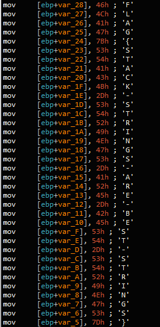

Task 3 Strings::Challenge 2

This sample tries to obfuscate the flag by assembling it on the stack at runtime. This is commonly known as a ‘stackstring’. Using a tool such as FLOSS an IDAPython script can be generated to easily deobfuscate such strings.
What is the flag of which that MD5 gets generated?
Answer: FLAG{STACK-STRINGS-ARE-BEST-STRINGS}